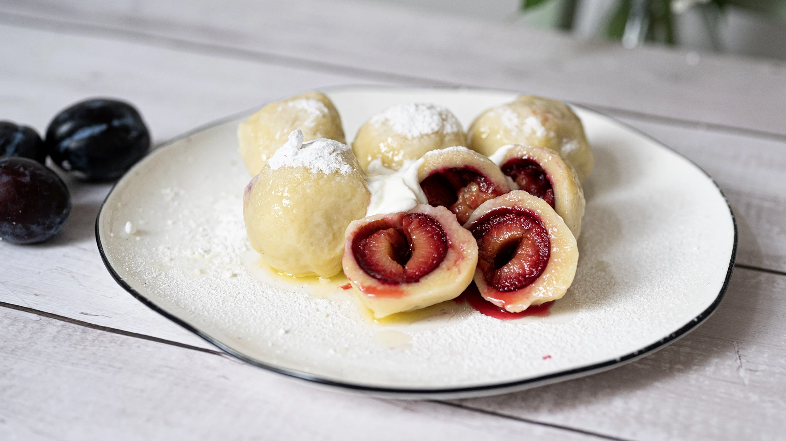

Fruit tvarog (curd) dumplings

Description
Fruit dumplings are an indispensable part of Czech cuisine, and everyone loves them.
The curd cheese dough is simple, quick and tasty. Even less experienced cooks can master these fruit dumplings.
Ingredients
Dough
- 250 g of tvarog
- 1 egg
- 240 g semi-coarse flour
- 2-3 table spoons of cooking oil
- A pinch of salt
- Fruit of choice
For sprinkling and dusting
- Butter
- Icing sugar
- Sour cream
Steps
- Knead the dough on a pastry board using the cottage cheese, eggs, flour, salt and oil.
- Cut the dough in half and roll out each piece into a sheet. Cut the dough sheet into squares, wrap fruit in each square, seal well and shape into dumplings.
- Place the prepared dumplings in boiling water, separate them from the bottom after a while, and once they rise to the surface, cook them for another 3-5 minutes.
- Pour melted butter over the dumplings on the plate, sprinkle with sugar and add a dollop of sour cream.